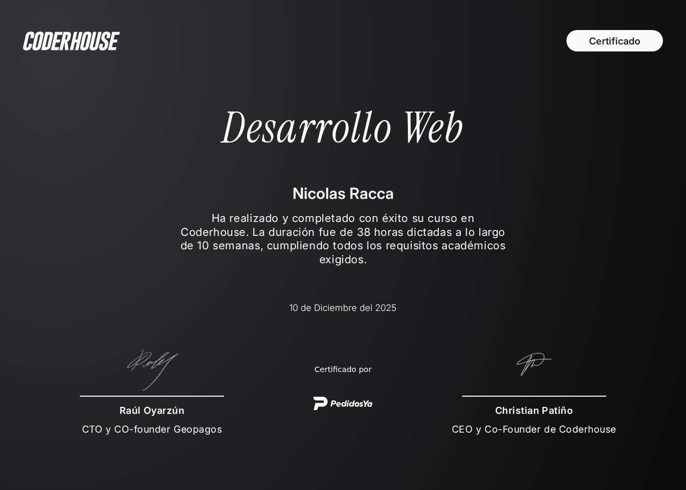
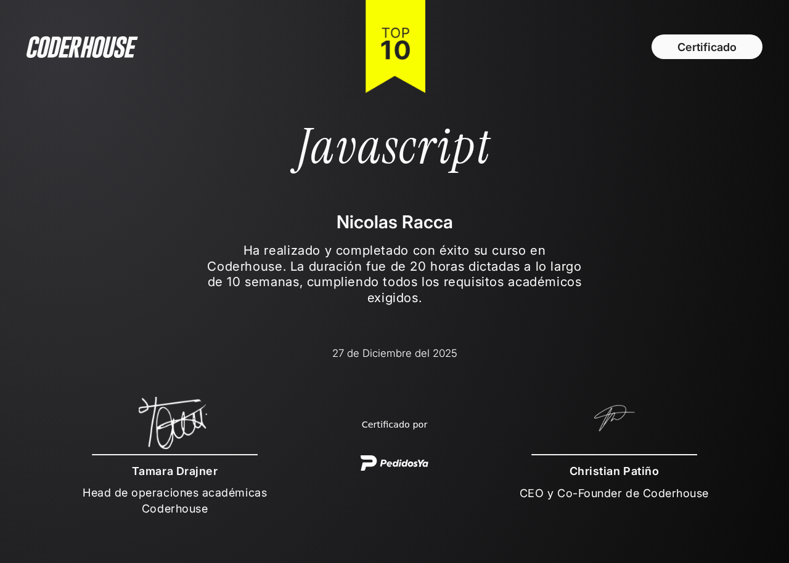
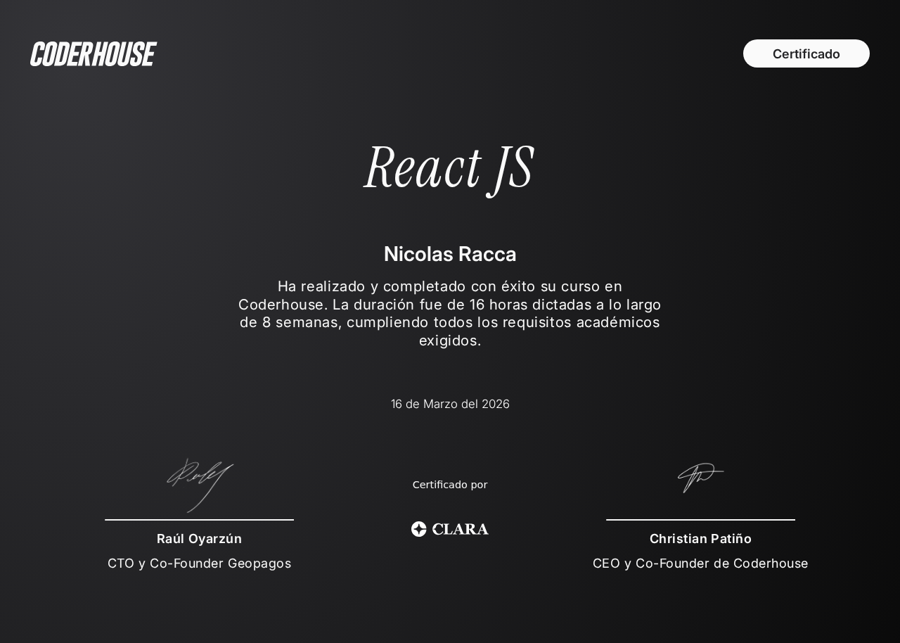
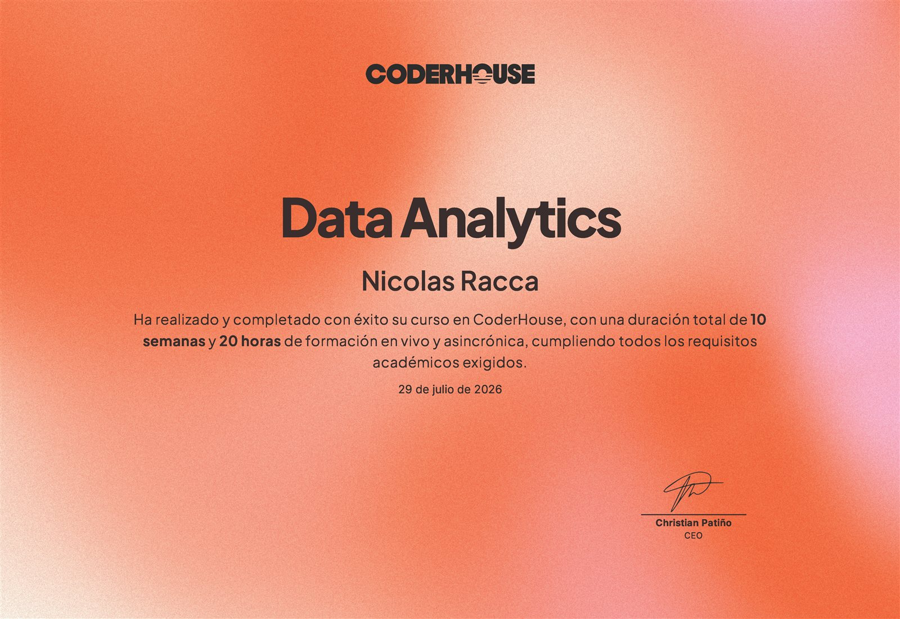
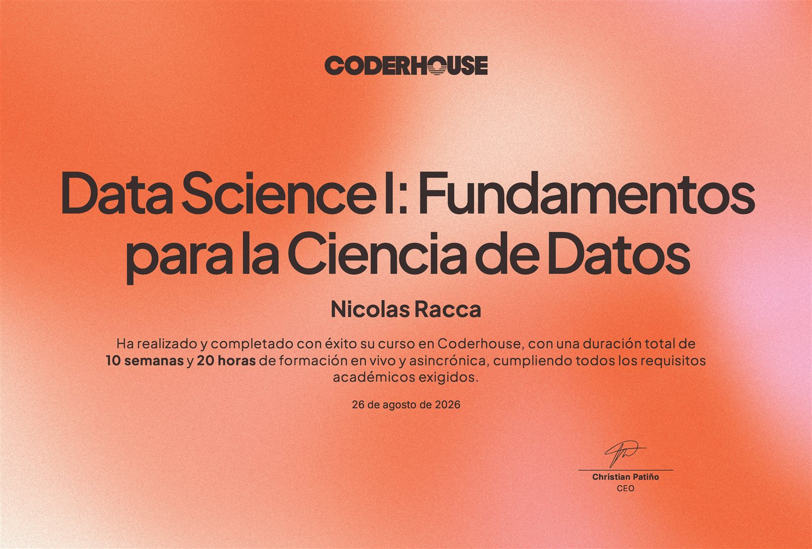
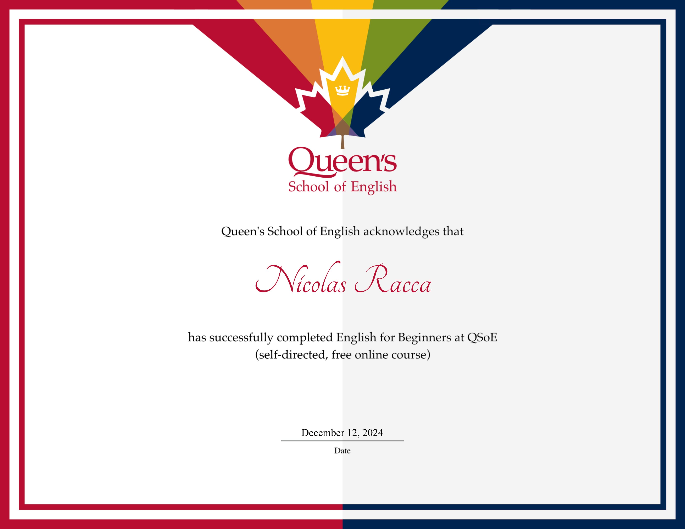

Full Stack Developer · Estudiante Ing. Informática
Apasionado por la programación, el desarrollo web, la innovación tecnológica y los datos. Estudiante de Ingeniería Informática.
Sobre Mí
📖 Descripción
Soy una persona dedicada al crecimiento profesional y personal. Tengo formación en ingeniería electrónica y actualmente estudio ingeniería informática, lo que me permite combinar conocimientos técnicos con nuevas herramientas digitales.
Me gusta el desarrollo web, la programación, los datos y los trabajos en equipo. Uso herramientas como Visual Studio Code, GitHub y Git para organizar y mejorar mi trabajo.
💪 Virtudes
Destaco por mi perseverancia y responsabilidad al enfrentar nuevos desafíos, así como por una curiosidad constante que me impulsa a aprender.
Me adapto con facilidad a entornos de trabajo dinámicos, lo que me permite aportar valor en cada proyecto. Mi actitud proactiva y colaborativa me convierte en un miembro valioso para cualquier equipo.
🎮 Pasatiempo
Fuera del ámbito laboral, me mantengo activo en el mundo de la tecnología explorando nuevas herramientas de desarrollo y aprendiendo lenguajes de programación de forma autodidacta.
🎯 Forma de Ser
Me esfuerzo por aprender continuamente, mantenerme en constante movimiento y evaluar mis propios resultados de forma autocrítica.
Valoro el trabajo en equipo y disfruto de las responsabilidades individuales. Mi meta es clara: crecer profesionalmente sin perder la pasión por lo que hago.
Mi Experiencia
Ingenieria Informatica
Febrero 2025 - Actualidad
Estudiando Ingeniería Informática con énfasis en desarrollo web y bases de datos. Me gusta mucho lo que hago, y apasionado por aprender.
Asistente Administrativo
Noviembre 2024 - Actualidad
Colaboro como asistente administrativo con un contador en la gestión de diversas tareas de oficina, desarrollando habilidades de organización y eficiencia.
Curso Intensivo de Data analytics & Data Science
Mayo 2026 - Actualidad
Estoy formandome en un curso intensivo de data analytics, donde estoy adquiriendo conocimientos en análisis de datos, visualización y machine learning.
Curso Intensivo de Desarrollo Web
Julio 2025 - Marzo 2026
Completé un curso intensivo donde adquirí conocimientos en HTML, CSS y JavaScript. Creé mi primera página web funcional desde cero, que es esta que ves en este momento.
Ingeniería Electrónica - UTN Córdoba
Febrero 2022- Noviembre 2024
Estudié Ingeniería Electrónica, donde adquirí sólidos conocimientos en programación, circuitos y sistemas digitales.
Mis Proyectos
Task Manager
Sistema de gestión de tareas con CRUD y base de datos relacional. Diseñado para organizar tareas y persistir información de forma estructurada.
Mercado de stickers
Apliqué gestión de estado con hooks de React y un flujo de compra responsive, priorizando una experiencia de usuario fluida de principio a fin.
Sistema de quiosco con inventario interactivo
Resolví el seguimiento de stock en tiempo real con JavaScript puro, con una arquitectura modular pensada para escalar a nuevas secciones sin reescribir código.
Dashboard de Ventas
Análisis exploratorio y dashboard con KPIs y visualizaciones para seguimiento comercial y toma de decisiones basada en datos.
Mis Conocimientos
Frontend
JavaScript
C#
Go
Python
SQL
Power BI
Git & GitHub
Mis Certificaciones

Desarrollo Web
Certificación en desarrollo web completo con HTML, CSS y JavaScript. Fundamentos para crear sitios web modernos y responsivos.

JavaScript
Dominio avanzado de JavaScript. Programación orientada a objetos, manejo de eventos, DOM y prácticas modernas de desarrollo.

React JS
Desarrollo de aplicaciones con React. Componentes, hooks, estado global y mejores prácticas en la creación de interfaces dinámicas.

Data Analytics
Formación en análisis de datos: exploración, limpieza y visualización de información para la toma de decisiones.

Data Science I: Fundamentos
Fundamentos de ciencia de datos, incluyendo estadística aplicada y primeros pasos en machine learning.

English for Beginners
Curso de inglés en Queen's School of English, enfocado en las bases del idioma para comunicación técnica y profesional.
Conectar Conmigo
Me gustaría conectar contigo. Puedes encontrarme en: